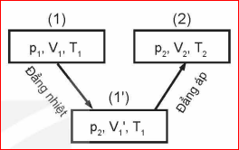

Các định luật Boyle và Charles chỉ xác định mối liên hệ giữa hai cặp thông số "áp suất – thể tích" và "thể tích – nhiệt độ" của một khối lượng khí xác định. Vậy, làm thế nào để xác định được mối liên hệ của cả ba thông số trạng thái của một khối lượng khí xác định?
Xét một khối lượng khí xác định biến đổi từ Trạng thái 1 (\(p_1, V_1, T_1\)) sang Trạng thái 2 (\(p_2, V_2, T_2\)) qua trạng thái trung gian (1') (\(p_2, V_1', T_1\)) như Sơ đồ Hình 11.1.
- Quá trình (1) \(\rightarrow\) (1'): Đẳng nhiệt (\(T_1 = \text{const}\)): \(p_1 \cdot V_1 = p_2 \cdot V_1' \implies V_1' = \frac{p_1 \cdot V_1}{p_2}\)
- Quá trình (1') \(\rightarrow\) (2): Đẳng áp (\(p_2 = \text{const}\)): \(\frac{V_1'}{T_1} = \frac{V_2}{T_2}\)
Thay \(V_1'\) vào ta thu được phương trình trạng thái.

Hình 11.1. Quá trình chuyển từ trạng thái (1) qua (1') tới trạng thái (2)📌 PHƯƠNG TRÌNH TRẠNG THÁI CỦA KHÍ LÍ TƯỞNG:
Độ lớn của hằng số trên phụ thuộc vào khối lượng và bản chất của lượng khí ta xét.
❓ 1. Hãy lập phương trình \(\frac{p_1 \cdot V_1}{T_1} = \frac{p_2 \cdot V_2}{T_2}\) bằng một cách biến đổi trạng thái khác cách trong Hình 11.1 để chứng tỏ: Quá trình chuyển trạng thái không phụ thuộc cách chuyển trạng thái mà chỉ phụ thuộc trạng thái đầu và trạng thái cuối.
Giả sử chuyển từ (1) (\(p_1, V_1, T_1\)) sang trung gian (1'') (\(p_1, V_2, T'\)) bằng quá trình đẳng áp, sau đó chuyển từ (1'') sang (2) (\(p_2, V_2, T_2\)) bằng quá trình đẳng tích:
Cân bằng hai biểu thức của \(T'\): \(\frac{T_1 \cdot V_2}{V_1} = \frac{p_1 \cdot T_2}{p_2} \implies \frac{p_1 \cdot V_1}{T_1} = \frac{p_2 \cdot V_2}{T_2}\). (ĐPCM)
❓ 2. Tại sao không gọi phương trình (11.1) là phương trình trạng thái của chất khí mà lại gọi là phương trình trạng thái của khí lí tưởng?
❓ 3. Hãy biểu diễn bằng đồ thị trong hệ tọa độ \((p - V)\) các quá trình chuyển trạng thái vẽ ở Hình 11.1.
❓ 4. Từ phương trình trạng thái của khí lí tưởng suy ra hệ thức liên hệ giữa áp suất và nhiệt độ tuyệt đối trong quá trình đẳng tích.
Từ phương trình: \(\frac{p_1 \cdot V}{T_1} = \frac{p_2 \cdot V}{T_2} \implies \frac{p_1}{T_1} = \frac{p_2}{T_2}\) hay \(\frac{p}{T} = \text{hằng số}\).
(Đó chính là Định luật Amontons / Gay-Lussac cho quá trình đẳng tích: Trong quá trình đẳng tích của một khối lượng khí xác định, áp suất tỉ lệ thuận với nhiệt độ tuyệt đối).
📝 BÀI TẬP VÍ DỤ (SGK):
Một cái bơm chứa \(100\text{ cm}^3\) không khí ở nhiệt độ \(27^\circ\text{C}\) và áp suất \(10^5\text{ Pa}\). Tính áp suất của không khí trong bơm khi nó bị nén xuống còn \(20\text{ cm}^3\) và tăng nhiệt độ lên đến \(39^\circ\text{C}\).
Các bước giải:
1. Tính chất bài toán: Cả ba thông số trạng thái của lượng khí đều thay đổi.
2. Xác định các trạng thái:
3. Áp dụng phương trình trạng thái:
\[ \frac{p_1 \cdot V_1}{T_1} = \frac{p_2 \cdot V_2}{T_2} \implies p_2 = \frac{p_1 \cdot V_1 \cdot T_2}{V_2 \cdot T_1} \]
\[ p_2 = \frac{10^5 \times 100 \times 312}{20 \times 300} = 5,2 \times 10^5\text{ (Pa)} \]
Có thể xác định được độ lớn của hằng số trong phương trình trạng thái của một lượng \(n\text{ mol}\) khí xác định (\(n = \frac{m}{M}\) với \(m\) là khối lượng khí, \(M\) là khối lượng mol của lượng khí).
Một mol của bất kì khí nào ở điều kiện tiêu chuẩn (\(T = 273\text{ K}\), \(p = 1,013 \times 10^5\text{ Pa}\)) đều có thể tích \(V = 22,4 \times 10^{-3}\text{ m}^3\). Phương trình trạng thái cho 1 mol khí là:
\(R = 8,31\text{ J/mol}\cdot\text{K}\) được gọi là hằng số khí lí tưởng.
Đối với \(n\text{ mol}\) khí lí tưởng, phương trình có dạng:
📜 PHƯƠNG TRÌNH CLAPEYRON:
Trong đó: \(p\) là áp suất (\(\text{Pa}\)), \(V\) là thể tích (\(\text{m}^3\)), \(n = \frac{m}{M}\) là số mol, \(R = 8,31\text{ J/mol}\cdot\text{K}\), \(T\) là nhiệt độ tuyệt đối (\(\text{K}\)).
Phương trình trạng thái của khí lí tưởng được dùng trong chế tạo khí cầu, bình chứa khí, thiết bị lặn, máy điều hòa, máy nén khí; nghiên cứu vật liệu, dự báo thời tiết và biến đổi khí hậu...
📌 1. Bóng thám không:
Người ta muốn chế tạo một bóng thám không có thể tăng bán kính lên tới \(10\text{ m}\) khi bay ở tầng khí quyển có áp suất \(0,3 \times 10^5\text{ Pa}\) và nhiệt độ \(200\text{ K}\). Hỏi bán kính của bóng khi vừa bơm xong phải bằng bao nhiêu? Biết bóng được bơm ở áp suất \(1,02 \times 10^5\text{ Pa}\) và nhiệt độ \(300\text{ K}\).
Lời giải:
Coi bóng thám không là hình cầu có thể tích \(V = \frac{4}{3}\pi R^3\).
Trạng thái 1 (khi vừa bơm): \(p_1 = 1,02 \times 10^5\text{ Pa}\); \(T_1 = 300\text{ K}\); \(V_1 = \frac{4}{3}\pi R_1^3\).
Trạng thái 2 (ở tầng khí quyển): \(p_2 = 0,3 \times 10^5\text{ Pa}\); \(T_2 = 200\text{ K}\); \(V_2 = \frac{4}{3}\pi R_2^3\) với \(R_2 = 10\text{ m}\).
Áp dụng phương trình trạng thái của khí lí tưởng:
\[ \frac{p_1 \cdot V_1}{T_1} = \frac{p_2 \cdot V_2}{T_2} \implies \frac{p_1 \cdot R_1^3}{T_1} = \frac{p_2 \cdot R_2^3}{T_2} \]
\[ R_1^3 = R_2^3 \times \frac{p_2 \cdot T_1}{p_1 \cdot T_2} = 10^3 \times \frac{0,3 \times 10^5 \times 300}{1,02 \times 10^5 \times 200} = 1000 \times \frac{90}{204} \approx 441,18 \]
\[ R_1 = \sqrt[3]{441,18} \approx 7,61\text{ (m)} \]
Đáp số: Bán kính khi vừa bơm xong khoảng \(7,61\text{ m}\).
📌 2. Túi khí ô tô:
Trong ô tô có thiết bị túi khí chứa chất rắn \(\ce{NaN3}\). Khi xảy ra va chạm mạnh, \(\ce{NaN3}\) bị phân hủy tạo thành \(\ce{Na}\) và khí \(\ce{N2}\) làm phồng túi khí để bảo vệ người lái.
Các yêu cầu:
a) Viết phương trình phân hủy \(\ce{NaN3}\).
b) Tính lượng chất khí \(\ce{N2}\) được giải phóng khi phân hủy \(100\text{ g } \ce{NaN3}\) (thể tích mol là \(24,0\text{ lít/mol}\)).
c) Tính áp suất khí \(\ce{N2}\) trong túi khí khi phồng lên đến thể tích \(48\text{ lít}\) ở nhiệt độ \(30^\circ\text{C}\).
Lời giải:
a) Phương trình phản ứng:
\( \ce{2 NaN3 -> 2 Na + 3 N2 ^} \)
b) Tính lượng khí \(\ce{N2}\) giải phóng:
Khối lượng mol của \(\ce{NaN3}\): \(M_{\ce{NaN3}} = 23 + 14 \times 3 = 65\text{ g/mol}\).
Số mol \(\ce{NaN3}\) có trong \(100\text{ g}\):
\[ n_{\ce{NaN3}} = \frac{100}{65} \approx 1,538\text{ (mol)} \]
Theo phương trình phản ứng, số mol khí \(\ce{N2}\) thu được là:
\[ n_{\ce{N2}} = \frac{3}{2} \cdot n_{\ce{NaN3}} = 1,5 \times 1,538 = 2,308\text{ (mol)} \]
Thể tích khí \(\ce{N2}\) ở điều kiện bài cho (\(24,0\text{ L/mol}\)):
\[ V_{\ce{N2}} = 2,308 \times 24,0 \approx 55,39\text{ (lít)} \]
c) Tính áp suất khí \(\ce{N2}\) trong túi khí:
Thể tích túi \(V = 48\text{ lít} = 48 \times 10^{-3}\text{ m}^3\).
Nhiệt độ tuyệt đối \(T = 30 + 273 = 303\text{ K}\).
Áp dụng phương trình Clapeyron \(p \cdot V = n \cdot R \cdot T\):
\[ p = \frac{n \cdot R \cdot T}{V} = \frac{2,308 \times 8,31 \times 303}{48 \times 10^{-3}} \approx 121087\text{ (Pa)} \approx 1,21 \times 10^5\text{ (Pa)} \]
■ Phương trình trạng thái của một khối lượng khí lí tưởng xác định:
■ Phương trình Clapeyron:
Trong đó \(R = 8,31\text{ J/mol}\cdot\text{K}\); \(n = \frac{m}{M}\) là số mol khí.
Giải thích được một số hiện tượng, thiết bị có liên quan đến phương trình trạng thái của khí lí tưởng. Ví dụ: giải thích được cách sử dụng bình oxygen trong y tế, túi khí trên ô tô; tính được thể tích, khối lượng, nhiệt độ của chất khí tạo thành trong các phản ứng hóa học.
Chinh phục 10 câu hỏi củng cố về Phương trình trạng thái & Phương trình Clapeyron!
Câu 1: Phương trình trạng thái của một khối lượng khí lí tưởng xác định được viết dưới dạng nào?
Câu 2: Trong phương trình Clapeyron p · V = n · R · T, hằng số khí lí tưởng R có giá trị bằng bao nhiêu?
Câu 3: Đơn vị của thể tích V khi áp dụng phương trình p · V = n · R · T (với R = 8,31) bắt buộc phải là:
Câu 4: Quá trình đẳng tích của một lượng khí xác định có mối liên hệ giữa áp suất p và nhiệt độ tuyệt đối T là:
Câu 5: Số mol n của một lượng khí khối lượng m và khối lượng mol M được tính theo công thức:
Câu 6: Một lượng khí biến đổi trạng thái làm áp suất tăng 2 lần, thể tích giảm 2 lần thì nhiệt độ tuyệt đối T sẽ:
Câu 7: Khí N2 tạo thành trong túi khí ô tô khi xe xảy ra va chạm có nguồn gốc từ phản ứng phân hủy chất nào?
Câu 8: Một khối khí có V1 = 10 L, p1 = 1 atm, T1 = 300 K. Nén khí đến V2 = 5 L, p2 = 3 atm thì nhiệt độ T2 bằng bao nhiêu?
Câu 9: Độ lớn của hằng số trong phương trình p · V / T = hằng số phụ thuộc vào yếu tố nào?
Câu 10: Ở điều kiện tiêu chuẩn (0°C, 1 atm), thể tích của 1 mol khí lí tưởng bất kỳ là bao nhiêu?
Bài 1:
Một lượng khí có thể tích \(10\text{ lít}\) ở áp suất \(1\text{ atm}\) và nhiệt độ \(27^\circ\text{C}\). Người ta nén khí đến thể tích \(4\text{ lít}\) và đun nóng đến nhiệt độ \(127^\circ\text{C}\). Tính áp suất của khối khí lúc sau.
Lời giải:
Trạng thái 1: \(p_1 = 1\text{ atm}\), \(V_1 = 10\text{ L}\), \(T_1 = 27 + 273 = 300\text{ K}\).
Trạng thái 2: \(V_2 = 4\text{ L}\), \(T_2 = 127 + 273 = 400\text{ K}\), \(p_2 = ?\)
Áp dụng phương trình trạng thái của khí lí tưởng:
\[ \frac{p_1 \cdot V_1}{T_1} = \frac{p_2 \cdot V_2}{T_2} \implies p_2 = \frac{p_1 \cdot V_1 \cdot T_2}{V_2 \cdot T_1} \]
\[ p_2 = \frac{1 \times 10 \times 400}{4 \times 300} = \frac{4000}{1200} \approx 3,33\text{ (atm)} \]
Đáp số: \(\approx 3,33\text{ atm}\).
Bài 2:
Tính khối lượng khí Oxygen (\(\ce{O2}\), khối lượng mol \(M = 32\text{ g/mol}\)) chứa trong một bình có thể tích \(20\text{ lít}\) ở áp suất \(100\text{ atm}\) và nhiệt độ \(17^\circ\text{C}\). Cho hằng số khí lí tưởng \(R = 0,0821\text{ L}\cdot\text{atm/(mol}\cdot\text{K)}\).
Lời giải:
Thông số bài cho: \(V = 20\text{ L}\), \(p = 100\text{ atm}\), \(T = 17 + 273 = 290\text{ K}\).
Áp dụng phương trình Clapeyron: \(p \cdot V = n \cdot R \cdot T\)
Số mol khí Oxygen trong bình là:
\[ n = \frac{p \cdot V}{R \cdot T} = \frac{100 \times 20}{0,0821 \times 290} \approx 83,99\text{ (mol)} \]
Khối lượng khí Oxygen trong bình là:
\[ m = n \times M = 83,99 \times 32 \approx 2687,7\text{ (g)} \approx 2,69\text{ (kg)} \]
Đáp số: \(\approx 2,69\text{ kg}\).
Bài 3:
Một lốp ô tô chứa không khí ở áp suất \(2,2\text{ bar}\) và nhiệt độ \(27^\circ\text{C}\). Sau khi xe chạy nhanh, nhiệt độ không khí trong lốp tăng lên đến \(57^\circ\text{C}\). Coi thể tích của lốp ô tô thay đổi không đáng kể. Tính áp suất của không khí trong lốp lúc này (theo đơn vị bar).
Lời giải:
Vì thể tích lốp không đổi nên đây là quá trình đẳng tích.
Trạng thái 1: \(p_1 = 2,2\text{ bar}\), \(T_1 = 27 + 273 = 300\text{ K}\).
Trạng thái 2: \(T_2 = 57 + 273 = 330\text{ K}\), \(p_2 = ?\)
Áp dụng định luật đẳng tích (suy ra từ phương trình trạng thái):
\[ \frac{p_1}{T_1} = \frac{p_2}{T_2} \implies p_2 = p_1 \cdot \frac{T_2}{T_1} = 2,2 \times \frac{330}{300} = 2,42\text{ (bar)} \]
Đáp số: \(2,42\text{ bar}\).